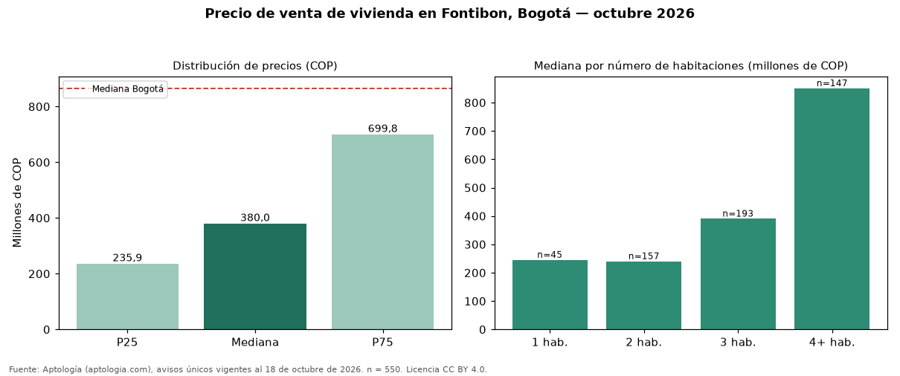

Precio de venta de vivienda en Fontibon, Bogotá — octubre 2026
En Fontibon, Bogotá, la mediana de precio de venta de vivienda es COP 380 millones, según 550 avisos únicos vigentes. Comparado con la mediana de la ciudad, COP 865 millones, la diferencia es de 56 % por debajo. El área mediana anunciada es 60 m² (en Bogotá: 146 m²). Por metro cuadrado, la mediana es COP 5.270.270/m² (−20 % frente a COP 6.557.377/m² en Bogotá), puesto 196 de 280 barrios con muestra suficiente. El rango intercuartílico va de COP 236 millones a COP 700 millones (razón 3,0), una dispersión alta. Cruzando con la oferta de arriendo del mismo barrio, la rentabilidad bruta implícita es de 8,1 % anual (canon por m² × 12 / precio por m²). El segmento con más oferta es el de 3 habitaciones (193 avisos, mediana COP 390 millones); pasar de 2 habitaciones a 3 habitaciones sube la mediana 62 %. Datos abiertos CC BY 4.0 de Aptología; fuente y búsqueda de inmuebles: https://www.aptologia.com/venta/bogota/fontibon. Archivos: PDF de 2 páginas, CSV con las cifras y gráfica PNG.

| Avisos únicos | 550 |
|---|---|
| Percentil 25 | COP 235.875.000 |
| Mediana | COP 380.000.000 |
| Percentil 75 | COP 699.750.000 |
| Mediana por m² | COP 5.270.270 |
Fuente: avisos vigentes de portales inmobiliarios recopilados por Aptología, deduplicados (mínimo 30 avisos únicos por celda). Precios pedidos, no cerrados. Fecha: 2026-10-18.